Reading: Chapter 14, 15, 16, 17, Prof. Onno Pols lecture notes, ASTR400A lecture notes
- Top Hat Q1, Q2, Q3
The four "fundamental" forces
Forces are defined by the second law of dynamics as the causes of changes in momentum (\(\mathbf{F}=m\mathbf{a}=d\mathbf{p}/dt\)), and they are a central concept of classical and non-relativistic physics
N.B.: in quantum mechanics and relativity forces are mathematically less easy to manipulate and a description of nature in the form of conserved quantities such as energy, momentum, etc. is more manageable).
We have already encountered several forces to construct physical models of astronomical objects – however not all forces are "ontologically" the same!
Apparent forces: manifestation of a non-inertial reference frame
Some forces, such as the centrifugal force or the Coriolis force are apparent: they arise in non-inertial frames (e.g., a rotating frame) as a consequence of the fact that the frame itself is accelerating.
Example: while you are going around a corner in your car, you may feel pushed towards the outer-edge of the curve. This is because implicitly you are considering the car as your reference frame, which is turning ⇔ accelerating to change the velocity direction ⇔ non-inertial. From the point of view of an inertial frame (e.g., a tree on the side of the road), there is a centripetal force (the friction between the wheels and the road, pointing towards the center of the curve) that is forcing the car to turn, but that force does not act on you directly, so you feel the car turning "under you" and perceive it as you being pushed to the exterior.
Note that the fact these forces are apparent just means we can find a reference frame where they are not there (and usually the math simplifies, so these are preferable), but it doesn't mean the effect of these forces is not real: you do move around relative to your car when you turn!

"Non-fundamental" forces
These are forces that we introduce as a simplified model of something more complex, that is they are an effective model for something more fundamental.
Example: The friction between the tires and the car! Friction is caused by electromagnetic interactions between the atoms/molecules of the tires and the asphalt, but we don't want to have to deal with an extremely large number of molecules and calculate one-by-one all their interactions: we can instead define some parameter (the coefficient of friction) and calibrate it empirically to describe the change in momentum of bodies "touching".
The concept of "touching", or in other words contact forces, itself is an effective non-fundamental force: at microscopic level we are made of atoms and molecules which are mostly empty. What we perceive as a contact force is the electromagnetic repulsion between our mostly empty component!
"Fundamental" forces
The 19th and 20th century physics research was in large part influenced by positivism, and searching for a "grand unification" of all forces, that is a single theoretical framework that would explain all causes of changes of momentum.
Electromagnetic force
This started with James Clerk Maxwell, who unified electricity and magnetism into electromagnetism, showing that one can be the source of the other, and which you get depends on the reference frame used to describe the phenomena (much like centrifugal vs. centripetal force depend on the reference frame). The electromagnetic force is mediated by photons: photons in classical mechanics are electromagnetic waves, and exchange of photons allows for electromagnetic interactions between charged particles.
Strong (nuclear) force
Another fundamental force is the nuclear force, also called strong force because it is much stronger than electromagnetism, although it only works at very short distances (of the order of 10-15 m, the typical size of a nucleus). This is what enables nuclear reactions in stars, if \(T\) is high enough that collisions bring nuclei close enough, the electromagnetic repulsion loses to the nuclear force and they can bind together. At particle-level it is mediated by gluons.
Gravity
Gravity is instead much weaker than electromagnetic forces, which allows solids to bind together without collapsing under their own weight. It is the first fundamental force studied by Newton, and it remains irreducible to other forces still today.
N.B.: The most modern theory of gravity that fits all the experimental constraints that we have, General relativity, considers gravity a manifestation of the intrinsic "shape" of space-time bent by masses! We do not yet have a quantum theory of gravity, so at particle level there is a theoretical particle, the graviton which can be constructed by analogy with other particles.
N.B.: The unification of gravity, for which the current best theory is general relativity, which is a classical (as opposed to quantum) theory, with quantum mechanics is a capstone problem for modern physics.
Weak force
The last "fundamental" force is the electroweak force, or simply weak force. This is weak respect to the strong, electromagnetic, and gravitational forces, and usually involves changes in flavor of leptonic particles (electrons, muon, and tau particles, differing in mass but all with the same charge), which produce neutrinos. These are a byproduct of changes in the leptonic particles, but not the mediator of the force, which are the \(Z\) and \(W\) bosons.

All other forces that appear in physics are effective models that can be explained in terms of these 4 forces, and many people still work on trying to finding a unifying framework for all these fours to reduce the number of fundamental forces.
N.B.: This is an example of a reductionist approach, trying to explain all phenomena with as few pieces as possible. 20th century discoveries such as deterministic chaos, emergent phenomena in complex system, non-linear systems also have revealed that often complex physical systems (e.g., the atmosphere of a planet, or a star, etc.) are not just the sum of their parts and reductionist approaches risk missing interesting and relevant phenomenology.
Solar neutrinos
We have encountered neutrinos in discussing the Sun's energy generation. These particles are the smoking gun of the weak force. Neutrinos are subatomic particles first theoretically predicted by Wolfgang Pauli in the 1930s based on the fact that in the decay of neutrons \(n\rightarrow p +e^{-}\) energy was apparently not conserved.

If the neutron were to decay into two particles (\(p\) and \(e^{-}\)), the total energy and momentum of the system, conserved, will be split into the daughter particles according to their mass, and should always be the same. Instead, experimental results showed a distribution of energy of the electrons coming out from decays:

Instead of abandoning the principle of conservation energy, Pauli proposed that the decay of the neutron produced not 2 but 3 particles: \(n\rightarrow p+e^{-} +\bar{\nu}\) with the third being hard to detect.

N.B.: the half-life of a free neutron \(n\) is about 15 minutes, and they decay into protons, electron and an anti-neutrino \(\bar{\nu}\) to conserve charge, energy, and leptonic number. This spontaneous decay mediated by the weak force does not occur has easily for neutrons bound in nuclei.
However, in the mid-50s, neutrinos produced by a nuclear power-plant were detected by Cowan and Reines: the proximity to the source made the neutrino flux sufficiently high (∼1012-1013 neutrinos s-1 cm-2, roughly 1000-10 000× the solar neutrino flux!). Since then, neutrinos from astrophysical sources (stars, stellar explosions, and jets) and have been detected, at various energies, and provide information complementary to photons since they hardly interact with matter.
On Earth, the main source of neutrinos is the Sun: by measuring their energy, we could even recently directly confirm specific nuclear reactions occurring in the Sun's interior, strongly and directly confirming the picture of energy generation we have discussed last lecture. Neutrinos play also a crucial role in the late evolution of massive stars, and their explosions, as we will see.
Typically, since neutrinos interact so little with matter, to detect them one needs a lot of matter to maximize the chances of an interaction. Historically this was done by filling underground abandoned mines with detector material. In the late 60s, Raymond Davis Jr. detected the flux of neutrinos from the Sun, but it was 1/3 of the predicted neutrino flux! This was dubbed the "missing solar neutrino problem", and initially the community thought either the theoretical prediction or the experimental apparatus were wrong.
N.B.: Because science is a collective enterprise, there is a sociology of science and the community decides collectively what are the important problems to work on. This per se is not a scientific (quantitative, based on empirical evidence) process, but it shapes the way scientific communities work. To learn more about this aspect, I highly recommend "History of Scientific Revolutions" by Thomas Kuhn.
For decades, this problem remained open: the experiment was repeated and the result confirmed, the theoretical predictions were double checked, with nothing pointing to errors. Ultimately, the solution required understanding neutrinos beyond the predictions of the standard model! Astrophysics pushed us beyond the standard model of particle physics.
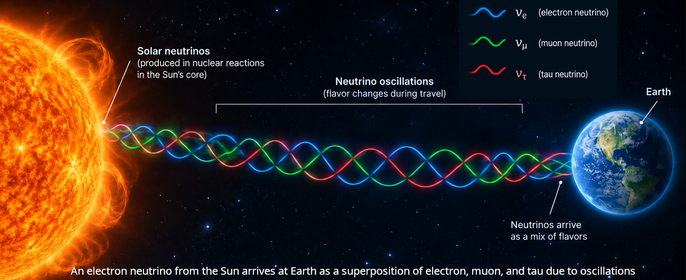
However, it turns out that the standard model of particle physics (built on quantum mechanics and decades of experiments in particle accelerators) is missing a key piece: neutrinos can "change flavors" as they travel from the Sun to Earth in neutrino oscillations. In nature there are three species of neutrinos (electron, lepton, and muon) corresponding to the three leptons (electron, and its more massive "cousins" muon and tau particles). Each of these 6 particles also has an antiparticle with same mass, opposite charge and opposite "leptonic charge". The neutrino-producing processes in a star like the Sun preferentially produce electron-flavor neutrinos and anti-neutrinos (N.B.: "flavor" is the real technical term!), which are also the easiest to detect, and the predictions were based on this fact.
By the time they arrive on Earth, about 2/3 of the expected electron neutrinos are going to have switched to muon or tau neutrinos, which the detectors then miss! These neutrino oscillations are the reason why the leptonic number is not a precisely conserved quantity (there is no exact symmetry of nature corresponding, only an approximate gauge symmetry).
Several Nobel prizes have been awarded for the detection of neutrinos, development of the theory on how they interact with matter, their oscillations, and even the The 2026 Nobel prize in physics to Francis Halzen was awarded for the development of neutrino detectors which require 1 km3 of ice to work!

Other experiments use large volumes of sea water, or huge tanks of water polluted with elements that are more likely to react with neutrinos deep in mines (e.g., at the famous Kamiokande mines in Japan).
Stars other than the Sun
After this digression on forces in physics and solar neutrinos, let's return to stars. We have discussed a bit about the Sun, but clearly there are many other stars in the Universe, which can have different properties than the Sun.
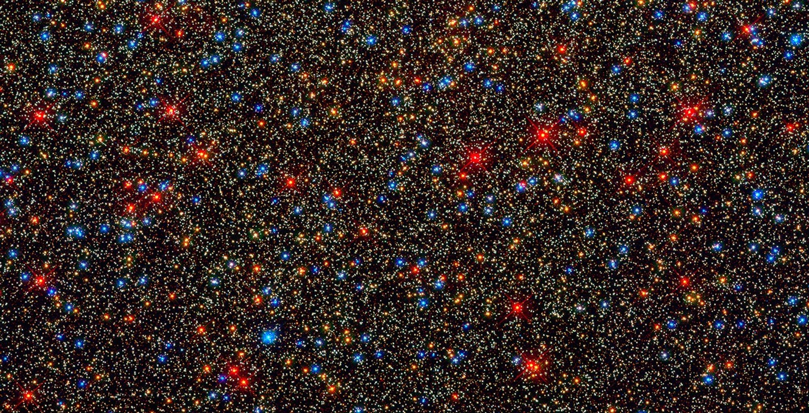
These are much father than the Sun (recall that proxima centauri is $∼ 1\,\mathrm{pc}≅ 4\,\mathrm{light\ years} away), and we only see them as point-sources with very few nearby exceptions. How can we learn about their properties?
Luminosity \(L\) vs. brightness \(B\)
We have seen that the luminosity \(L\) of the Sun, that is its rate of energy losses to photons at the surface is a crucial property, which sets its lifetime. This is an intrinsic property of the star, but not one we can directly empirically measure: we only measure photons in a certain wavelength range, and we are at a given distance, so we don't get the intrinsic rate of energy loss from a star, but just the brightness of the star seen from our position and in the limited range of frequencies we observe (filter band pass).
How are these related? We can use conservation of energy to find out: the luminosity is an energy loss per unit time from the star. Once this energy is lost, as light travels outward, energy has to stay constant. As the distance from the star increases, the constant energy is spread over a bigger surface! Therefore, in each time interval:
where \(B\) is the brightness, \(L\) is the intrinsic luminosity, and \(r\) is the distance to the star. If we know \(B\) (observed) and \(r\), we can derive the intrinsic luminosity \(L\).
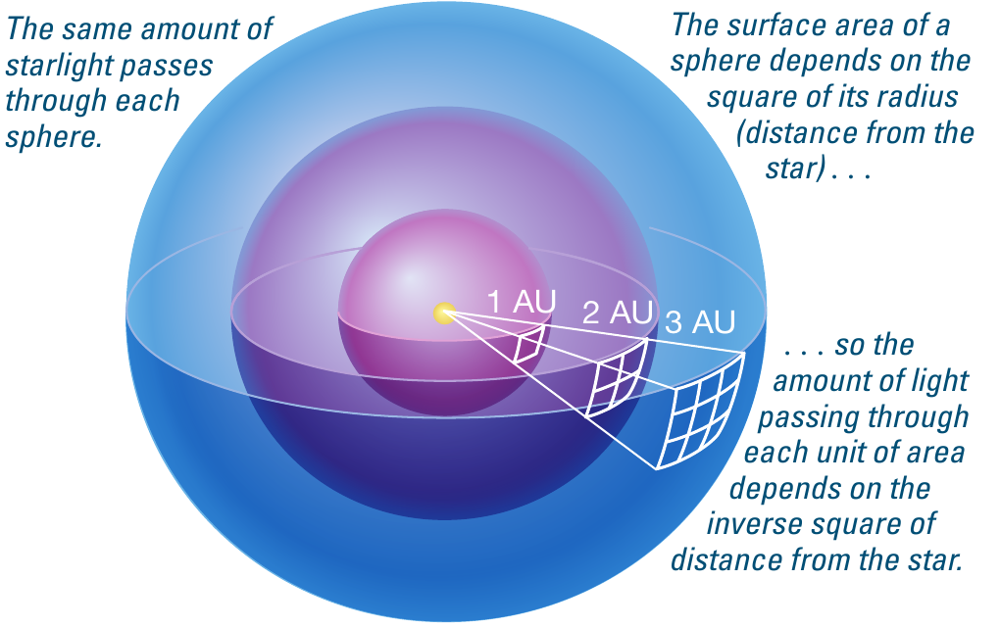
N.B.: The power of the distance appearing in Eq. \ref{eq:brightness} is the same as for the Universal law of gravity, and for the electromagnetic force: this is not a coincidence, they all appear due to the geometry of a sphere and conservation arguments.
Distance
Clearly then, we need to know the distance to the stars to be able to derive a fundamental intrinsic property: how luminous they are! Note that the distance to the stars remains a key problem in astrophysics since the ancient Greek arguments about geocentrism due to the lack of parallax in the stars, and it is still topical as measuring the distance to stars is still the first step in measuring cosmological distances!
We have already seen a geometric method to measure stars, which was known in antiquity, but unobservable by naked eye: the parallax method. Galileo's discovery that stars not-visible by naked eye are outnumbering naked-eye stars suggested that maybe stars are too far to detect it, but with the improvements in telescope precision and accuracy, we now routinely can detect stellar parallax!
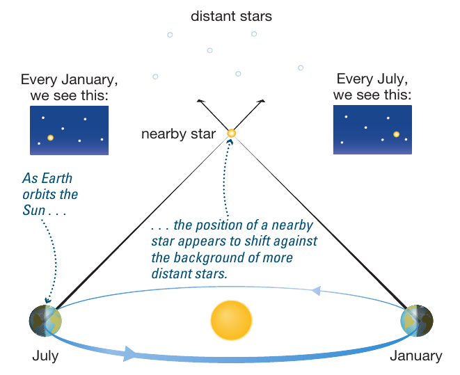
Nowadays, we have developed two space-telescoped dedicated to measuring parallax without interference from the atmosphere: Hypparcos which flew in the 90s, and Gaia which recently completed the data acquisition phase, and will release the next batch of data in December 2026.
These satellites have measured distance (parallax) and velocity (proper motion and radial velocity) of a large number of stars, see the video below for the inferred trajectory based on the 3rd Gaia data release (DR3):
Spectral-type and temperature
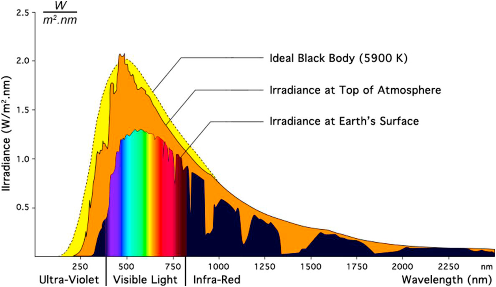
We have seen that the light of a star is primarily thermal radiation (a black body spectrum characterized by a temperature \(T\)), modified by the light-matter interaction occurring in the atmosphere of the Sun (which imprints the absorption lines in the spectrum of a star), and possibly in the Earth atmosphere (if observed from the ground).
This conclusion is far from obvious, and was reached thanks to the intense labor in the early 20th century at Harvard observatory, mostly carried out by a group of women collectively known as the "Harvard computers":
In the early 20th century, before or while a quantum understanding of atomic physics was developing, taking spectral observations of stars had become a routine task, and several large collections of spectra existed.
The Harvard computers started a morphological classification of the spectra based on based on features such as the prominence of Balmer lines of Hydrogen. Classes were labeled A, B, … based on these morphological properties.
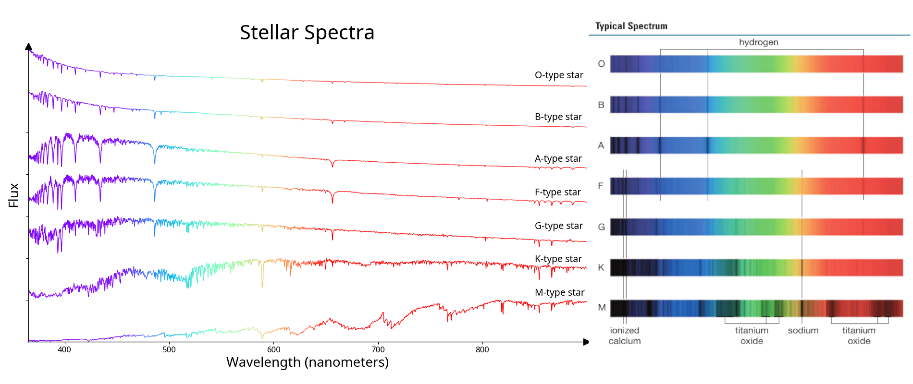
Annie Jump Cannon was the first to realize that the lines where related to the temperature in the stellar atmosphere, which determines the electron populations in the atoms and thus which electrons have the right energy to block photons causing lines in the spectra. This allowed to reorder and simplify (merging classes) the spectral types, which are a sequence in temperature from hot to cold: O, B, A, F, G, K, L, M, (L, T, Y).
Finally, in 1925, Cecilia Payne Gaposhkin realized further that the strength of a line is determined by the ionization state specifically, and not the total amount of mass of an element identified in the spectrum, leading her to the (initially controversial) conclusion that although most lines observed are not from H and He, most of the mass is in H and He.
The bottom line is: through the analysis of stellar spectra and the understanding of (i) thermal radiation (the source) and (ii) light-matter interactions (the propagation) we can determine the ionization state of elements in a stellar envelope and thus obtain its temperature.
N.B.: We define the effective temperature \(T_{\rm eff}\) to be the temperature of an ideal black-body emitter (no spectral lines!) with the same \(L\) as the star:
nothing special happens in the star at \(T=T_{\rm eff}\), but it's a good arbitrary location to define the boundary between the stars interior and its atmosphere.
Relation with colors
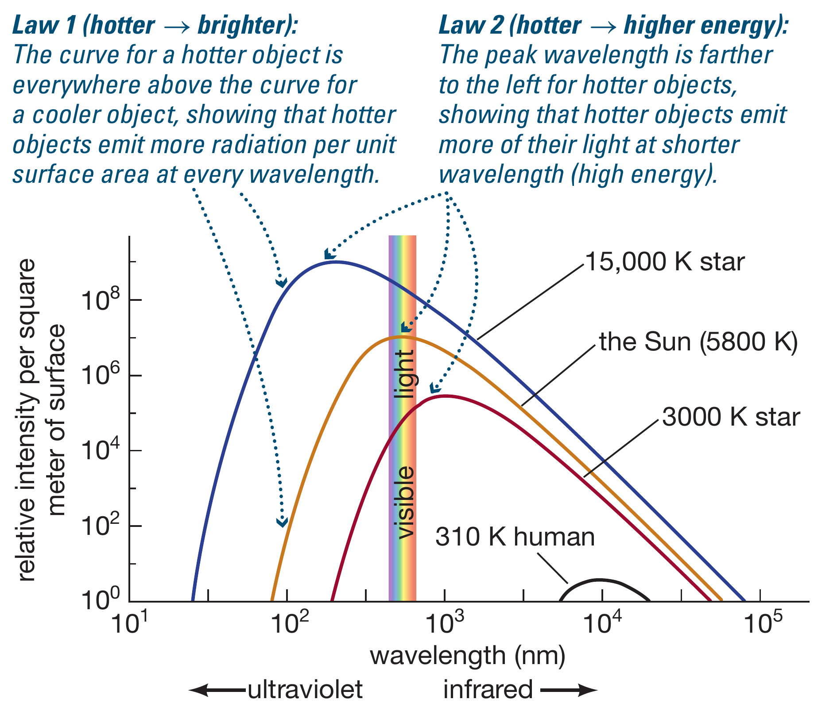
Depending on \(T_{\rm eff}\) the maximum flux of a black body (i.e., of the "continuum") shifts in wavelength, something known as "Wien's displacement law": \(\lambda_{\rm max}\prop 1/T\), the higher the temperature the shorter the wavelength of the maximum flux. This in turn means that the change in \(T_{\rm eff}\) translates in a change in the "color" of the star, because the wavelengths around \(\lambda_{\rm max}\) will dominate the perception of the star (originally for naked eye observations, but this can be generalized).
This can further be formalized by defining a "color index" as the difference in flux between different photometric bands.
The Color-Magnitude diagram
We now have a way to measure brightness and color of stars, which are related to luminosity and effective temperature. We can try to sort the stars on the two-dimensional plane defined by these quantities. For example, considering the cluster shown above:
That's a very structured plot, with 90% of the stars on one diagonal line! But this was just one cluster: maybe there is something special about it.
Gaia second data release, with more than 1.3 billion stars also shows a qualitatively similar shape:
![[[https://sci.esa.int/web/gaia/-/60198-gaia-hertzsprung-russell-diagram][Gaia DR2 CMD]]](./images/Gaia_DR2_HRD_Gaia.png)
These diagrams show on the x-axis the temperature (but increasing to the left: this is an artifact of making these plots before the relationship between spectral type and temperature was understood) or equivalently color index, and on the y-axis brightness in a specific band (of the Gaia or Hubble space telescope instruments) or equivalently (when the distance is known) luminosity.
Depending on which axes one choses, we get a color magnitude diagram, which is a plot of an empirically measured pair of properties for a population of stars, or a Hertzsprung-Russel diagram (named after the two scientists that independently suggested it) using theoretical quantities such as luminosity and temperature.
Combining the empirically observed population with theoretical models of stars, the overlap in the axes of these two diagrams can be used to study the evolution of stars.
Why do 90% of stars fall on one line ?
Mathematically, a line is the locus of points \(y(x)\) such that \(y=ax+b\) for some parameters \(a\) and \(b\). However, the various values of the intercept \(b\) just cause a shift of the lines which remain parallel: \(a\) is the most important parameter, and lines are one-parameter families (neglecting the intercept that just shifts them).
Therefore, the fact that most (90%) of stars are along one line, or in other words the linear relation between color and magnitude (that is effective temperature and luminosity), suggests there is one single parameter that determines the position on a star on this diagram. This parameter cannot be one of the things that we are plotting, which varies from star to star. To find it, we need to measure more things about stars.
One thing we know for the Sun, thanks to Kepler's laws and the orbital motion of planets is its mass. Because gravity is the force that dominates stars and depends on mass, maybe this is the first thing to go after! However, unfortunately, the mass of a star is not a direct observable, and measuring it is typically a very hard problem. However, binary stars can help!
N.B.: This once again is my own research topic!
Binaries are common
The Sun is clearly not in a binary system. However, it is not uncommon for stars to have gravitationally bound companion(s) orbiting around them, which can be of great help to determine their properties.
In fact, in this case we have two stars presumably born at roughly the same time, presumably with the same initial composition, and we can derive physical properties comparing them to each other.
N.B.: At zeroth order of approximation (neglecting the impact of irradiation), from the dynamical perspective, a planet+star system is also a binary, and many of the classical techniques used to find planets come from the study of binary systems!
The figure below shows as a function of stellar mass (bottom x-axis) or as a function of stellar spectroscopic type (top x-axis, we will see that these are related soon!) the fraction of stars that have at least one companion (so binaries, triples, etc., bold symbols) and the fraction that has two or more companions (so triples, quadruples, etc., thinner symbols). While this figure doesn't tell us how big and how close the companion(s) are, it is increasingly harder to observe companions next to bright stars, and observational bias favor higher mass and closer companions.
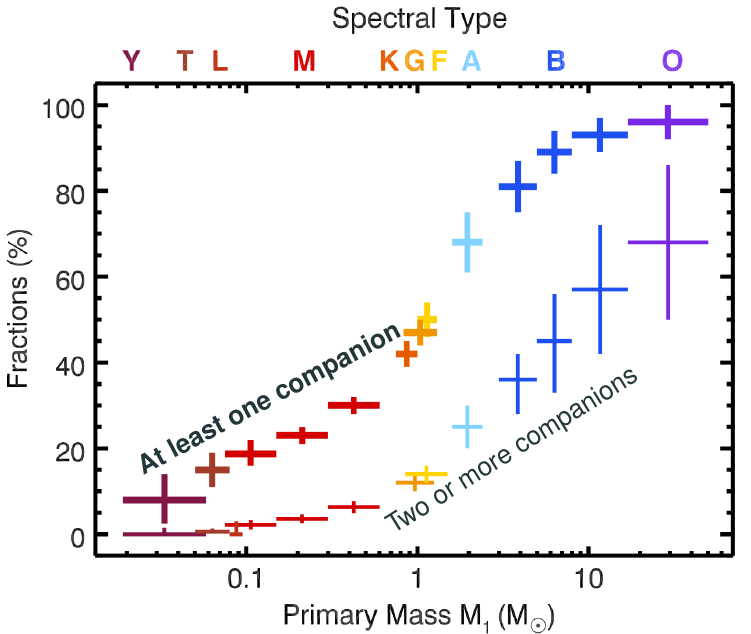
Let's review some types of binaries.
- Visual binaries
These are binaries that can be resolved (i.e., one can identify two distinct point sources) by naked eye. Typically, this means astrophysically very wide binaries that are unlikely to interact beyond the fact that they are gravitationally bound and they orbit each other. Nevertheless, they have an important historical role, since Hershel observation of their motion of the sky over decades proved that Kepler's law are valid beyond the Solar system.
Mitchell 1767 also used statistical argument that all the visual binaries visible at the time could not be just chance alignment, and instead had to be somehow physically related to each other.
A classic example are Mizar & Alcor in the Big Dipper: the ability of finding the "double star" in this asterism was used as an eyesight test to become an astronomer in Hellenistic times. The name Alcor comes from the arabic for "hard to see"! Nowadays with modern telescopes we can see that Mizar is itself a quadruple system made of two binaries orbiting each other, and Alcor may itself be a binary, for a total of maybe 6 stars (e.g., Mamjek et al. 2010)!
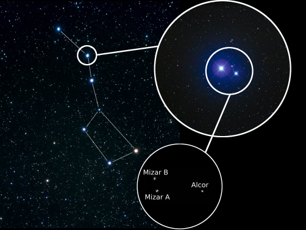
Figure 17: Zoom in on Mizar & Alcor from Renzo 2019 - Astrometric binaries
Wide binaries where one of the two stars is too faint to be seen can still be found by looking at the peculiar motion of the star that can be seen on the sky. What matters is its proper motion (not the apparent motion due to the Earth rotation around its axis and revolution around the Sun) with respect to background stars too far to be moving. For a single star, this is usually a straight line (because the timescale for it to turn around the Galactic center is typically ∼ hundreds of millions of years). However, if the star is in a binary, what moves along a straight line is the center of mass of the binary! The photocenter (i.e. the point from where we can detect light) will "wiggle" around this straight line due to orbital motion (and on top of the parallax periodic wiggle).
This was first detected for the binary Sirius A and Sirius B by Bessel in 1844 (the detection of photons from Sirius B followed in 1862 by Clark), and demonstrated the validity of Kepler's laws outside of the solar system. Nowadays, this is a very timely because of the precise astrometric measurements by Gaia:
- this has been used to find Gaia BH1 (El Badry et al. 2023a), BH2 (El Badry 2023b), and BH3 (Gaia Collaboration, Panuzzo et al. 2024): these systems have stars orbiting around an otherwise undetectable Black Hole! With the upcoming Gaia DR4 data release, possibly 100s of astrometric binaries hosting a BH are expected (see e.g., Chawla et al. 2022)
- it can also be used to find stars in wide orbits around NS or other faint stars, and possibly even massive planets!
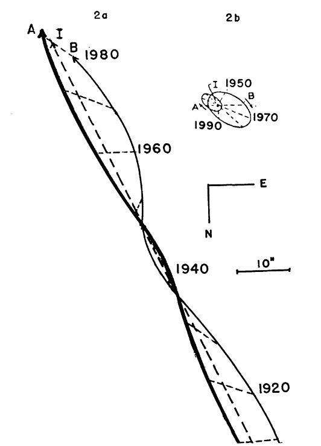
Figure 18: Path on the sky for Sirius A (thick line), Sirius B (thin line), and the center of mass (dashed line). Top right: absolute orbits around the center of mass. From Lippincott 1961. - Spectroscopic binaries
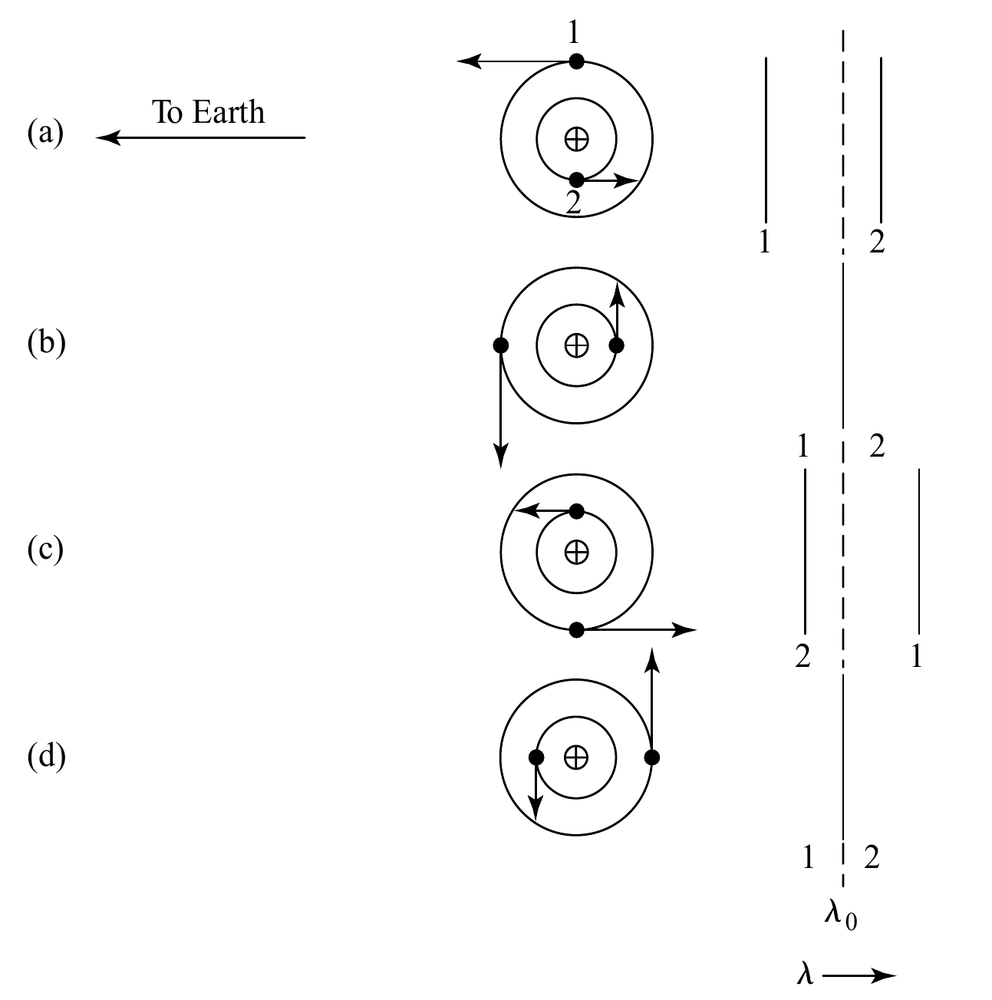
Figure 19: Schematic representation of the Doppler shift of spectral lines in binaries from which one can calculate radial velocities. Fig. 7.3 in Carrol & Ostie 2007 or 2.3 in Tauris & van den Heuvel 2023 books. - SB1
In a spectrum, one star of the binary dominates, but we can see its orbital motion as Doppler shifting of the spectral lines. Even if we never see the less bright star, we can infer its presence from the orbital motion of the brighter star.
N.B.: Radial velocity surveys that find massive and close-by planet are effectively finding SB1 binaries made of a star and a planet!
- SB2
These are spectroscopic binaries where both stars are contributing light to the spectrum, meaning there will be two sets of spectral lines that are periodically Doppler shifted in couter-phase.
- SB1
- Eclipsing binaries
These are binaries when at some point in the orbit one star passes in front of the other. This blocks some of the light from one of the two stars causing an eclipse and a dip in the light curve (i.e., the plot of the luminosity of the system as a function of time).
This of course can only happen if the inclination of the orbital plane of the binary w.r.t. the line of sight is not too large. Typically, astronomers define the inclination of the orbital plane \(i\) w.r.t. the plane of the sky, therefore the line-of-sight (which is perpendicular to the plane of the sky by definition) has an angle \(\varphi = \pi/2 - i\) w.r.t. the orbital plane. To have an eclipse, at least partial,
\begin{equation} \sin(\varphi) \leq \frac{R_{1} + R_{2}}{a} \ \ , \end{equation}where we use that \(\sin(\varphi)=\cos(i)\), and \(a \times \cos(i)\) is the projected binary separation a on the plane of the sky, which is smaller than \(R_{1}+R_{2}\) with \(R_{i}\) stellar radii, leads to an eclipse. The eclipse will be total if
\begin{equation} \sin(\varphi) \leq \frac{R_{1} - R_{2}}{a} \end{equation}Note that in either case, the occurrence of an eclipse puts an upper limit on sin(ϕ), that is a direct observational constrain on the inclination angle i.
The time duration of an eclipse can be used to determine the radii of the two stars. Consider the following figure:
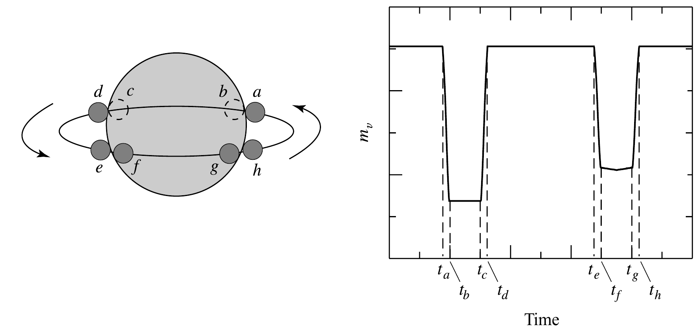
Figure 20: Light cuve (visual magnitude as function of time) for an eclipsing binary with i=π/2, figure 7.9 in Carrol & Ostie's book one can see that, labeling with 2 the geometrically smaller star (darker gray) and assuming the orbit to be circular and the semi-major axis to be a and the period \(P\):
\begin{equation} \frac{t_{d} -t_{a}}{P} = \frac{2(R_{1}+R_{2})}{2\pi a} \ \ , \end{equation}and
\begin{equation} \frac{t_{c} -t_{b}}{P}_{} = \frac{2(R_{1}-R_{2})}{2\pi a} \ \ . \end{equation}These equations allow to calculate \(R_{j}/a\) and if also the masses are known also the individual radii \(R_{j}\) using Kepler's laws to get rid of the orbital semi-major axis \(a\).
Dynamical mass determination
- Visual binaries
Using Kepler's laws, we can use binaries to measure observationally masses without relying on hard, expensive, and uncertain stellar models.
In particular the third law can be written as
\begin{equation} \label{eq:Kepler3} G(M_{1}+M_{2}) = n^{2} a^{3} \ \ , \end{equation}where Mi are the masses of the stars, n= 2π/P is the angular velocity (a.k.a. "true anomaly") and a is the semimajor axis of the orbit (of the orbit of the reduced mass point μ = M1M2/(M1+M2) around the center of mass).
N.B.: Often for solar-system application M2 ≪ M1 = M☉, so M2 can be neglected (e.g., if M2 = M⊕). This is generally not the case with star+star binaries.
For a visual binary (see above) where we can measure the semi-major axes ai of both stars around the center of mass, we also have another equation that follows from the definition of center of mass:
\begin{equation} \label{eq:semimajor_axes} M_{1} a_{1} = M_{2} a_{2} \ \ , \end{equation}where a1 + a2 = a. If we know the distance d to the binary (d ≫ a, so we can consider both stars at the same distance), then the angular size of the ellipse that each stars traces on the orbit of the sky is αj = aj/d for j=1,2. In reality, the orbit is typically not on the plane of the sky, but it has an inclination! This means what we can see is not aj but the projection of it on the plane of the sky aj sin(i). We can then solve these two equations for the individual stellar masses (just having observations long enough to trace the semi-major axes of wide visual binaries and knowing their distances, for example because we have parallax measurements).
N.B.: even without knowing the distance d, using Eq. \ref{eq:semimajor_axes} one can still determine the mass ratio q=M2/M1!
- Spectroscopic (and eclipsing) binaries
In this case, we have access to more information thanks to the variable "radial velocity/ies" (RV) of the stars, that is the measurable Doppler shift of their spectral lines due to the orbital motion.
However, what we can see though this is only the projected orbital motion along the line of sight (because we only get Doppler shift along the line of sight), this is why the terminology is "radial velocities": it's velocities along the radii of the celestial sphere centered on the observer!
Following standard nomenclature, let's call z the direction of the line of sight, using xy for the plane of the sky. By definition the radial velocity of each star is dz/dt. ν here is the true anomaly (such that dν/dt = n), ω is the argument of periastron - that is the angle between the line of nodes (line where the plane of the sky, assumed to contain the focus of the ellipse, and the plane of the orbit intersect) and the direction of periastron.
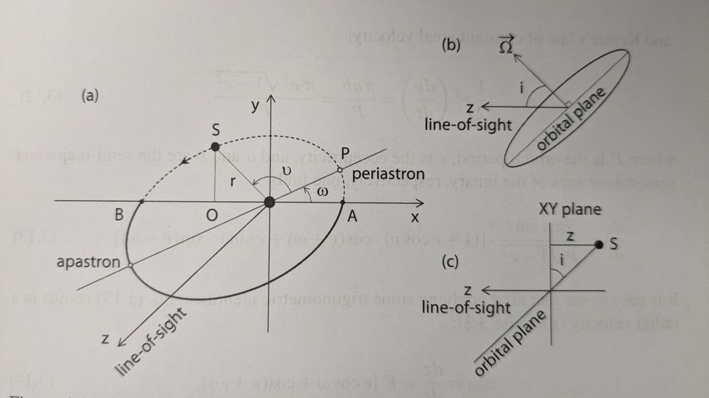
Figure 21: Geometry of a binary orbit. This is Fig. 3.3 in Tauris & van den Heuvel 2023 book. The one can calculate: z= r sin(i) sin(ν+ω) with r radius of the orbit (which for an elliptical orbit is a function of time). The factor r sin(ν+ω) gives the length of the segment OS in the figure (which lies on the plane of the orbit which intersects the plane of the sky along the direction AB), and the factor sin(i) projects it onto the line of sight. The radial velocity is therefore:
\begin{equation}\label{dzdt} \frac{dz}{dt} = \left(r \cos(\nu+\omega)\frac{d\nu}{dt}+\frac{dr}{dt}\sin(\nu+\omega)\right)\sin(i) \ \ . \end{equation}N.B.: For a Keplerian, non-precessing, unperturbed orbit, ω is a constant.
Using Kepler's second law
\begin{equation} \label{eq:Kepler2} \frac{1}{2}r^{2}\frac{d\nu}{dt} = \frac{\pi ab}{P} = \frac{\pi a^{2} \sqrt{1-e^2}}{P} \ \ , \end{equation}where P is the orbital period, a and b are semi-major and semi-minor axes, and
\begin{equation} e = \sqrt{1-b^{2}/a^{2}} \ \ , \end{equation}is the eccentricity, and the relation between r≡ r(ν) for an ellipse:
\begin{equation} r = \frac{a(1-e^{2})}{1+e\cos(\nu)} \ \ , \end{equation}one can finally rewrite the radial velocity from Eq. \ref{dzdt} as
\begin{equation}\label{eq:vrad} v_\mathrm{rad} = \frac{dz}{dt} = K (ecos(\omega)+cos(\omega+\nu)) \ \ \end{equation}where
\begin{equation} K = \frac{2\pi a\sin(i)}{P\sqrt{1-e^{2}}} \ \, \end{equation}is the so-called semi-amplitude of the radial velocity, which apart from the sin(i) factor depends only on observable quantities if one can get spectra of many epochs (i.e., return to take spectra of the same binary at many times, typically at least 7 spectra are required for a decent fit to all these parameters):
- P → from the time interval between repeating identical spectra
- e → from the shape of the measured radial velocities as a function of time (i.e., radial velocity curve)
- ω → similarly as e, it influences the shape of the radial velocity curve and can be deduced from it
- \(a\sin(i)\) → if the binary is SB2, then we can measure \(K_{1}\equiv K_{1}(a_{1})\) and \(K_{2 }\equiv K_{2} (a_{2})\) and use the relation between \(a_{1}+a_{2} = a\) to work out asin(i)
- ν → this is less directly obtained by performing an orbital fit using other orbital parameters (mean anomaly and eccentric anomaly)
N.B.: In a real observation, one also needs to remove the component along the line of sight due to the motion of the Earth around the Sun, and the peculiar motion of the Sun (i.e., \(v_\mathrm{rad}\) from Eq. \ref{eq:vrad} \(\rightarrow v_\mathrm{rad}-\gamma\) with γ peculiar velocity of the observer).
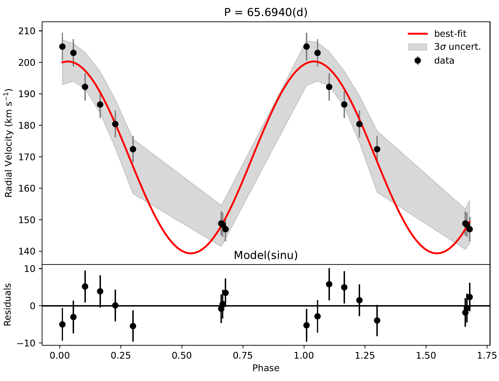
Figure 22: Example of a radial velocity curve for a circular (e=0) binary in the SMC from the presently ongoing BLOeM survey (Shenar et al. 2024). Black data points are measurements of the radial velocity from one spectrum (one epoch), these are phase-folded (from the inferred period one can determine the phase of the binary at each epoch and use it as x-axis). The red curve is a best fit model with the gray band showing a 3σ uncertainty. The bottom panel shows the residuals between the models and the observations. Credits: Dr. N. Britavskiy. For more examples, see also Fig. 1 and 2 in Mahy et al. 2022. Therefore, for an SB2 binary we can observe dzj/dt = vrad, j for each j=1,2 star, and we can determine K1 and K2. using Eq. \ref{eq:Kepler3} multiplied by sin3(i) to make the projection of the semi-major axis of the orbit on the line of sight, a × sin(i):
\begin{equation} G(M_{1}+M_{2})\sin^{3}(i) = n^{2} a^{3} \sin^{3}(i) \ \ , \end{equation}and using \ref{eq:semimajor_axes} rewritten as
\begin{equation} \frac{a_{1} \sin(i)}{a_{2} \sin(i)} = \frac{M_{2}}{M_{1}} \ \ , \end{equation}we can solve for Mjsin3(i), where except for the inclination angle of the orbit, we have the masses! In the case of an eclipsing SB2 binary, from the eclipses we can measure the inclination angle and obtain a direct measurement of the masses. These are the most precise mass measurements (so-called "dynamical masses", because they are based on orbital dynamics). They are only possible thanks to the occurrence in nature of stellar binaries!
N.B.: The highest stellar masses measured with these method are about ∼80M☉ in the eclipsing SB2 binary WR20a (e.g., Raauw 2004, Bonannos 2004).
In the case of an SB1 binary, when only one spectrum is visible, we can write
\begin{equation} a = a_{1} +a_{2} = a_{1}(1 + \frac{a_{2}}{a_{1}}) = a_{1} (1 + \frac{M_{1}}{M_{2}}) = a_{1} \frac{(M_{1}+M_{2})}{M_{2}} \ \ . \end{equation}Thus, we can rewrite Eq. \ref{eq:Kepler3} × sin3(i) as
\begin{equation} (M_{1} +M_{2}) \sin^{3}(i) \frac{M_{2}^{3}}{(M_{1} +M_{2})^{3}} = \frac{n^{2}}{G}a_{1}^{3} \sin^{3}(i) \ \, \end{equation}where the r.h.s. depends only on observables, and thus this allow us to derive observationally the mass function
\begin{equation} f(M_{1}, M_{2}) = \frac{M_{2}^{3 }\sin^{3}(i)}{(M_{1} + M_{2})^{2}} \ \ , \end{equation}which together with an estimate of the mass-ratio provides a limit on M2.
Mass-luminosity relation
Using systems for which this mass and radius measurements are possible, we can derive empirical mass-luminosity and mass-radius relations:
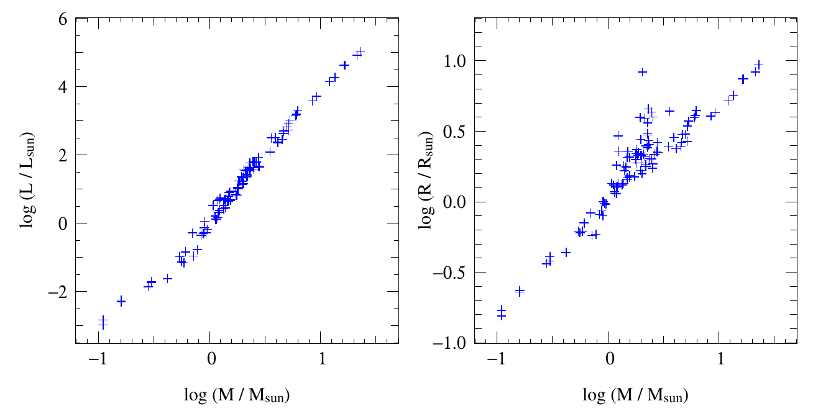
In the best astronomical tradition, this was initially fit with a powerlaw, but as the range of stellar masses explored grew, this became a broken powerlaw:
with \(x=4\) for \(M\le0.8\,M_{☉}\), \(x=3\) for \(0.8< M/M_{☉}<50\), \(x=1\) for \(M\geq 50\,M_{☉}\). These thresholds are extremely approximated, probably metallicity dependent, as we will possibly see later in the course. Moreover, and importantly, these hold only for so-called "main sequence" stars, the one following also the \(L(T_{\rm eff}\)) relatively tight relation on the color-magnitude diagram: evolved stars are a different problem!